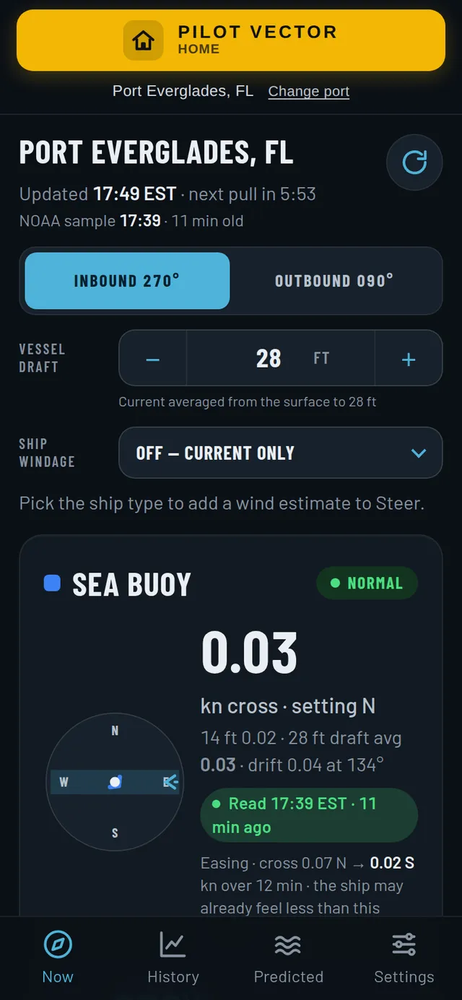
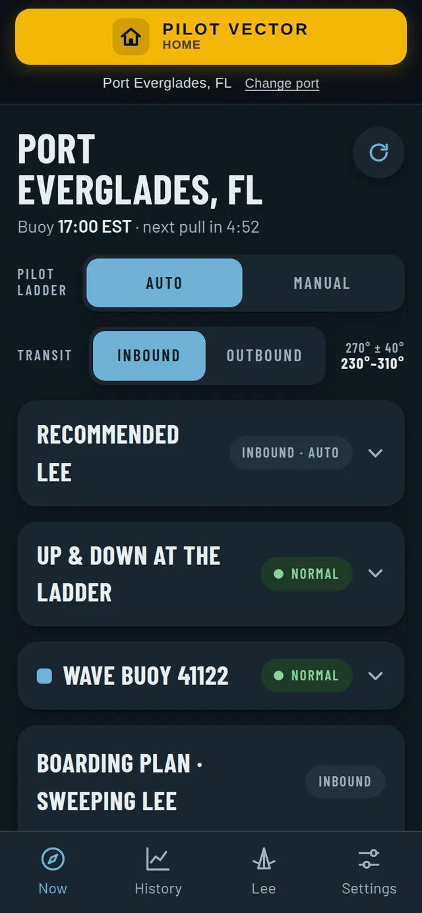
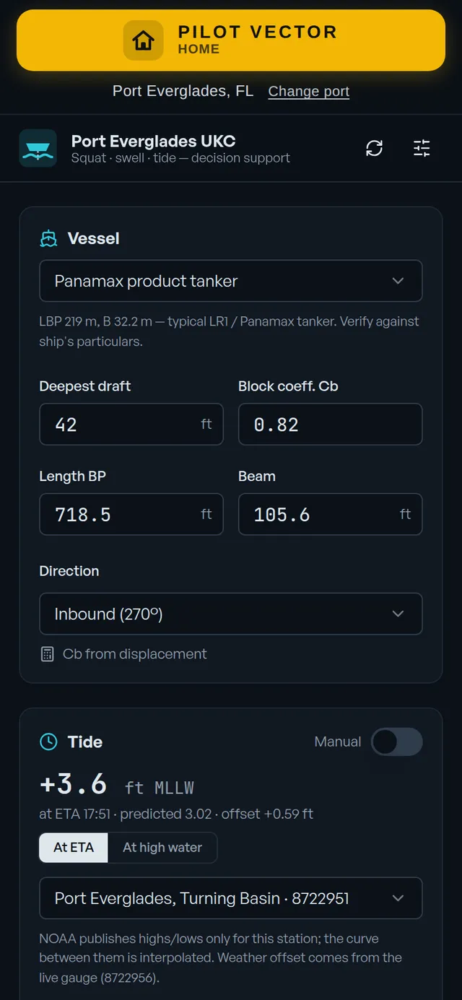
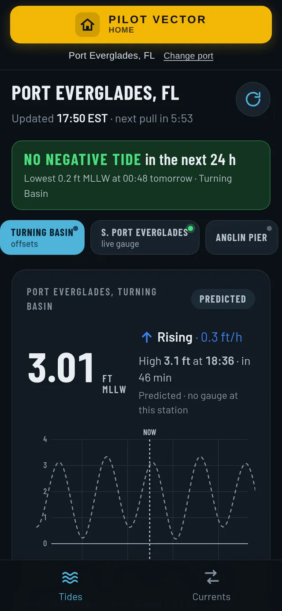
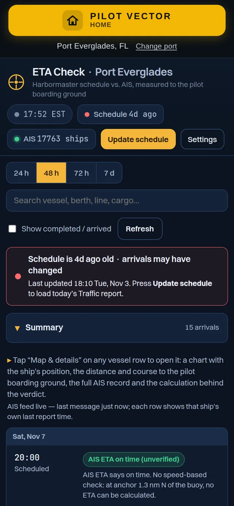
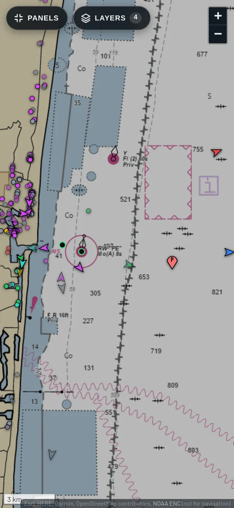
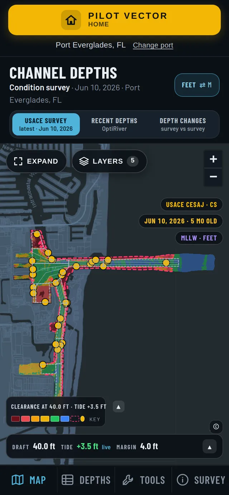
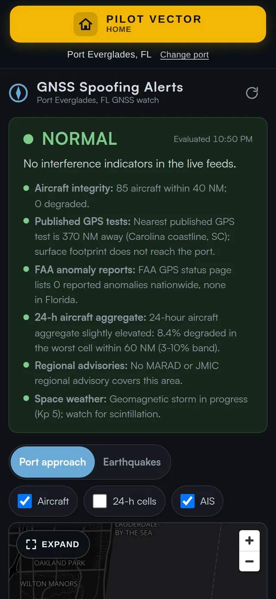
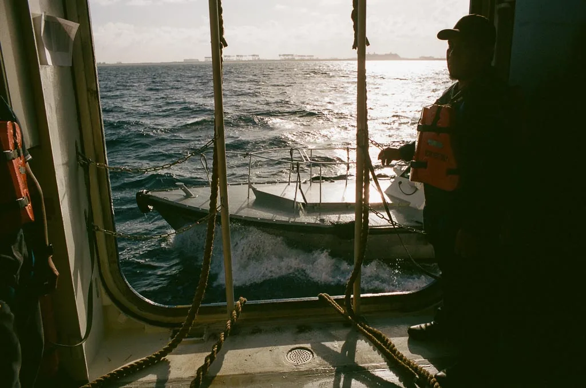

Product line 02
Pilot Vector
Live at pilot-vector.com
One place for the numbers a pilot needs before the job.
Pilot Vector brings port-specific operational information into a single advisory app for harbor pilots. Set a home port once and it opens there every time, with the day's conditions laid out against the port's own channel geometry and schedule.
128 ports in 14 countries. Pilot Vector is an advisory tool that supplements professional judgement. It is not a certified or primary navigation system.

What is in the app
Thirteen modules, the important ones first.
Each module has its own pages and settings, saved per port on the device. Values shown here are from Port Everglades.
- Currents · Set and DriftSet, drift and heading to steer along each channel leg, from the port's live current stations, with the ship's draft and windage taken into account.
- Pilot Boarding and WavesSea state at the boarding ground from the wave buoy, the recommended lee, up-and-down motion at the ladder, and a boarding plan for the sweeping lee.
- UKC · SquatSquat, wave motion, tide and under-keel clearance for the vessel and transit, with the ship's particulars entered once.
- TideWater level now, next high and low, the trend, and observed level against the prediction.
- ETA CheckThe port schedule compared with each ship's AIS ETA and actual position, so a late or early arrival is visible before the boat leaves the dock.
- Traffic View MapAIS ships drawn to scale in the approach and harbor, with vessels under way and at anchor distinguished.
- Channel DepthsCorps of Engineers condition surveys colored for the ship's draft and the tide of the moment.
- GNSS Spoofing AlertsA watch on public GNSS interference indicators and GPS test notices affecting the port approach.
- Weather Stations MapEvery live current, tide and weather station on one chart, with what each is reporting now.
- Port GuidelinesBerth limits, a ship check against them, and the full pilot guidelines for the port.
- Bridges · Air DraftBridge openings, tender numbers and clearance at the tide of the moment.
- Live CamerasHarbor and channel camera views where the port makes them available.
- Maritime ReportingEmergency contacts for the sector and a way to file incident reports with photos.
Inside the app
Screens from Pilot Vector at Port Everglades.
HomeEvery module for the port on one screen, with live values 
CurrentsSet, drift and heading to steer for the inbound or outbound leg 
Pilot boardingRecommended lee, motion at the ladder and the wave buoy 
UKC and squatClearance for the ship, the tide and the sea state 
TideLevel, trend and observed against predicted 
ETA checkSchedule against AIS ETA and position 
Traffic viewAIS ships drawn to scale in the approach 
Channel depthsCondition surveys colored for draft and tide 
GNSS alertsInterference indicators for the approach
Built for the way pilots work
Open it on the way to the boat.
- Home port by defaultPick a port once and the app opens there, with every module ready for it. Change ports from the top of any screen.
- Runs in the phone's browserNothing to install. Add it to the home screen and it behaves like an app.
- Feet or metersLengths default to feet with a shared toggle to meters.
- Public, named sourcesNOAA PORTS and CO-OPS, NDBC buoys, AIS, Corps of Engineers surveys and public GNSS integrity indicators, each labelled with its age.
- Growing coverage128 ports in 14 countries today, with directories for ports that do not yet have public live buoys. Port-specific features can be added on request.
Try it at your port.
Pilot Vector is an evolving platform. If you spot an error or want a feature built for your port, write directly.
